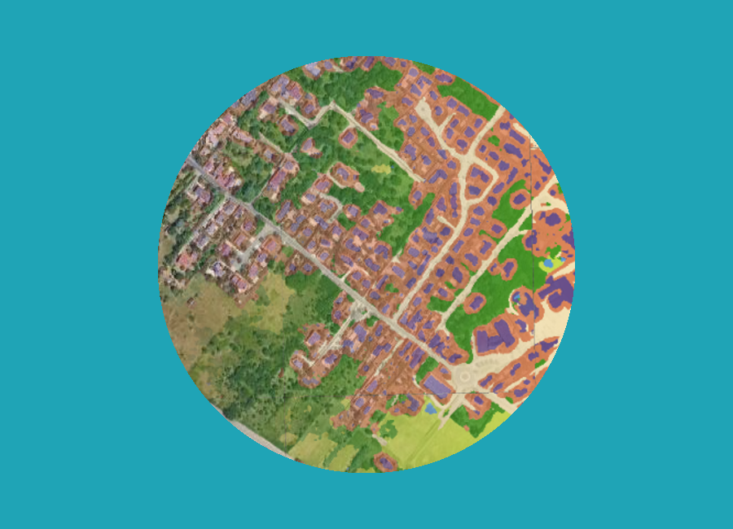
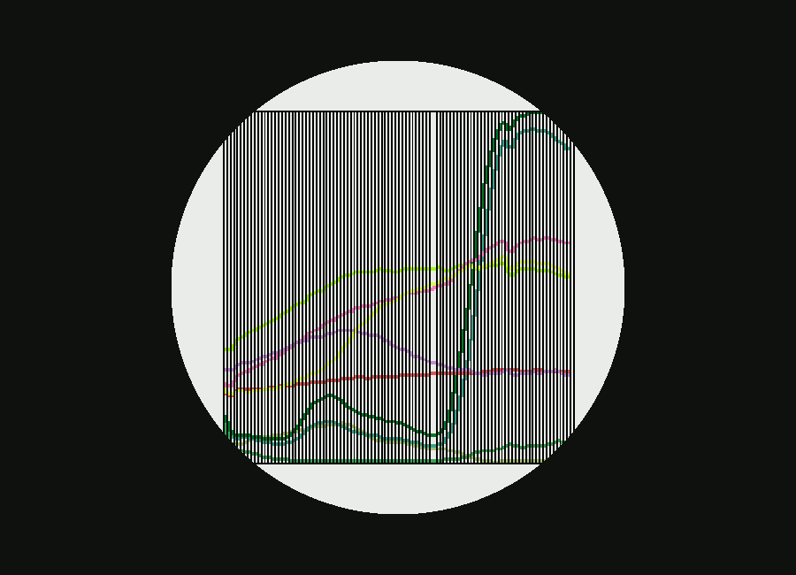
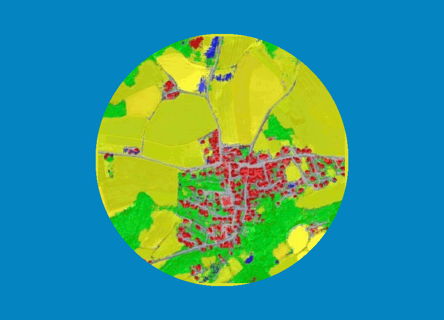
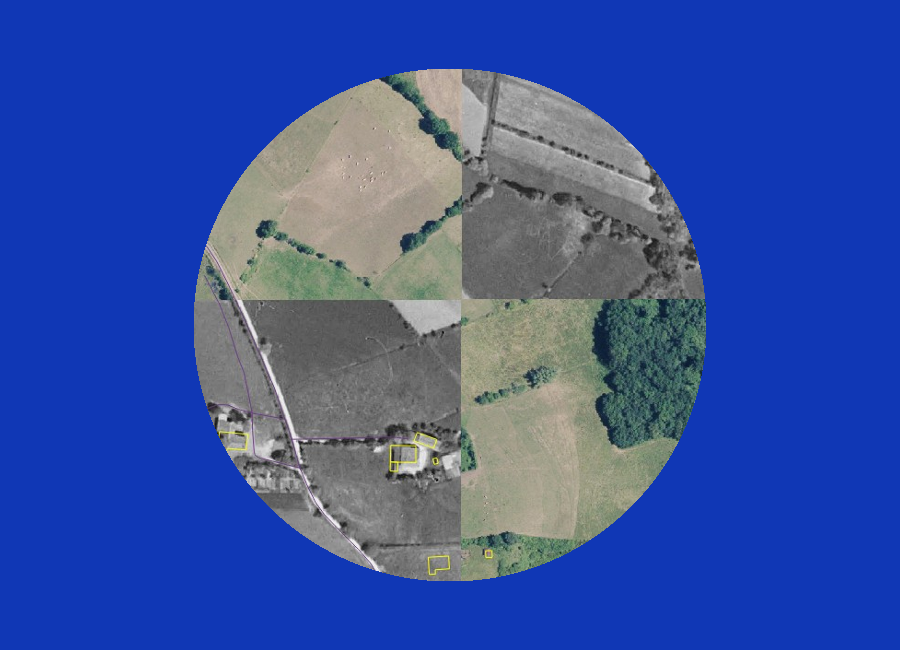
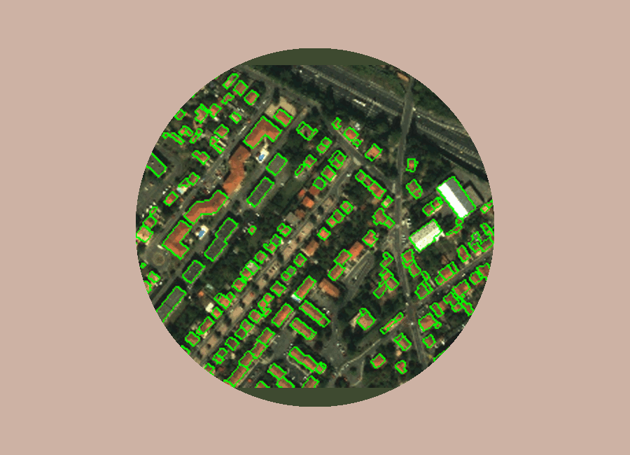
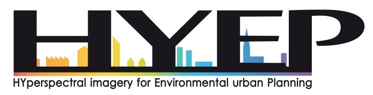
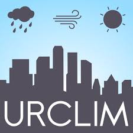
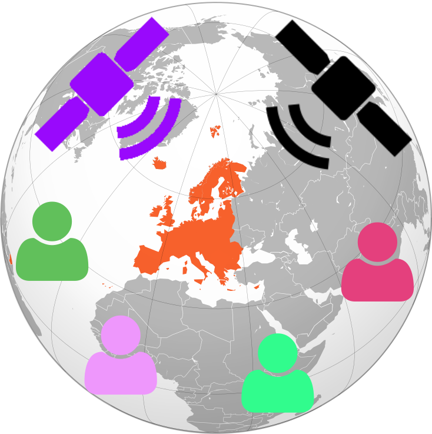
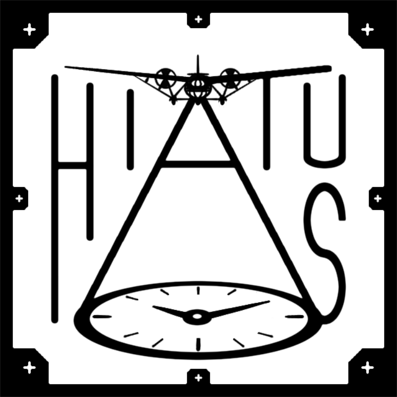
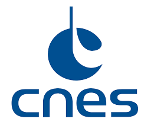

Arnaud Le Bris
73 avenue de Paris · 94165 Saint-Mandé CEDEX · (+33)1 43 98 80 00 + 7168 ·
arnaud.le-bris@ign.fr
Researcher in remote sensing, land cover classification and image processing.
Member of the STRUDEL research team
Chargé de recherche en télédétection, classification de l'occupation du sol, traitement d'image.
Membre de l'équipe STRUDEL
Research Interests
Sujets de recherche

Hyperspectral imagery
Imagerie super/hyperspectrale

Data fusion
Fusion de donnees

Aerial archival images - pose retrieval and analysis
Images aériennes anciennes - remise en géométrie et analyse

Quality evaluation - Change detection
Qualification de BD - Détection de changements
Experience
Expériences professionnelles
Ingénieur des Travaux Géographiques et Cartographique de l'Etat, affecté au LaSTIG (ex- Service de la Recherche de l'IGN) depuis 2005
Classification de l'occupation du sol, avec notamment : Extraction semi-automatique d'un certain nombre de thèmes d'occupation du sol en milieu montagneux, à partir d'ortho-images et de modèles numériques de terrain. Extraction de l'occupation du sol en milieu urbain dans une optique de détection de changement du thème bâti. Classification de peuplements forestiers Extraction automatique de points de liaison (en particulier pour l'aérotriangulation) Participation à des études ou des projets pour le compte de l'IGN ou de commanditaires extérieurs (CNES, DGA) Classification de l'occupation du sol à très grande échelle en milieu urbain : sélection des bandes spectrales appropriées à partir de données hyperspectrales Fusion de données
Publications
Journals
Journaux
Conferences
Conférences
Books and Chapters
Chapitres de livres
Workshops and Posters
Ateliers et posters
Other Publications (Technical Reports, Dissemination)
Autres publications (Rapports techniques)
- Oussama Ennafii, Arnaud Le-Bris, Florent Lafarge, Clément Mallet. Semantic evaluation of 3D city models. 2018. ⟨hal-01875781⟩


- Christiane Weber, Thomas Houet, Sébastien Gadal, Rahim Aguejdad, Grzegorz Skupinski, et al.. Hyperspectral Imagery for Environmental Urban Planning. [Research Report] CNRS UMR TETIS, ESPACE, LETG, ONERA, GIPSA-lab, IRAP, IGN. 2018. ⟨hal-01930658⟩
- Christiane Weber, Thomas Houet, Sebastien Gadal, Rahim Aguejdad, Grzegorz Skupinski, et al.. ANR HYEP ANR 14-CE22-0016-01 Hyperspectral imagery for Environmental urban Planning HYEP - Programme Mobilité et systèmes urbains 2014. [Rapport de recherche] CNRS UMR TETIS, ESPACE, LETG; ONERA; GIPSA-lab; IRAP; IGN. 2018. ⟨hal-01888126⟩
- Arnaud Le Bris. Optimisation de la configuration d'un instrument superspectral aéroporté pour la classification : application au milieu urbain. Institut National de l'Information Géographique et Forestière. 2015. ⟨hal-04097979⟩
- Arnaud Le Bris. Extraction semi-automatique de thèmes d’occupation du sol en milieu montagneux à partir d’ortho-images et de connaissances complémentaires, en vue de la production de la carte de base. [Rapport Technique] IGN - Laboratoire MATIS. 2010, pp.133. ⟨hal-02370247⟩
- Arnaud Le Bris. Détection de changements 2D à partir d’images optiques submétriques Pléiades : utilisation d’outils de classification de l’occupation du sol et application au thème bâti. [Rapport Technique] IGN - Laboratoire MATIS. 2010, pp.127. ⟨hal-02370276⟩
- Arnaud Le Bris. Expériences d’appariement d’images avec SIFT. [Rapport Technique] IGN - Laboratoire MATIS. 2010, pp.163. ⟨hal-02370256⟩
Projects
Projets
On-going and past research projects
Projets de recherche actuels et terminés

HYEP
ANR HYEP.

URCLIM
ERA4CS URCLIM.

MAESTRIA
ANR MAESTRIA.

HIATUS
ANR HIATUS.

TOSCA OSO
TOSCA OSO.
TOSCA Artificialisation/Urbanisation
TOSCA Artificialisation/Urbanisation.
Other research activities
Autres activités de recherche
PhD advisor
Encadrement de thèses
- Hermann Tagné (en cours depuis 2019) : Vers une mise à jour de l'occupation du sol du Cameroun par analyse d'imagerie satellitaire et l'exploitation de données cartographiques existantes. (Université Paris Est - Ecole doctorale MSTIC, direction : C. Mallet (LASTIG) et D. Monkam (Université de Douala))
- Oussama Ennafii (en cours depuis 2016) : Semantic aware quality evaluation of 3D polyhedral building models. (Université Paris Est - Ecole Doctorale MSTIC, direction : C. Mallet (LASTIG) et F. Lafarge (INRIA))
- Tristan Postadjian (en cours depuis 2015) : Vers une occupation du sol France entière à très haute résolution. (Université Paris Est - Ecole Doctorale MSTIC, direction : C. Mallet (LASTIG), co-encadrement: H. Sahbi (UPMC-LIP6))
- Clément Dechesne (2017) : Segmentation sémantique de peuplements forestiers par analyse conjointe d’imagerie multispectrale très haute résolution et de données 3D Lidar aéroportées. (Université Paris Est - Ecole Doctorale MSTIC, direction : V. Gouet-Brunet (LASTIG), co-encadrement : C. Mallet (LASTIG))
Post-doct supervision
Encadrement de post-doctorats
- Lanfa Liu (en cours depuis 2019) : Fusion d’informations hétérogènes pour la définition d’un processus de mise à jour de données de couverture et d’usage du sol - Intégration d’incertitudes sémantiques, spatiales et liées à la source. (dans le cadre du projet LandSense, co-encadrement : A.-M. Olteanu-Raimond et L. Jolivet (LASTIG))
- Amine Bourki (en cours depuis 2018) : Complémentarité entre imagerie superspectrale et acquisition multi-vues pour la cartographie d'une occupation du sol fine en milieu urbain (dans le cadre du projet ERA4CS URCLIM)
- Walid Ouerghemmi (2016) : Fusion tardive d'images multispectrales à très haute résolution spatiale et de données hyperspectrales. (dans le cadre du projet ANR HYEP, co-encadrement : C. Mallet (LASTIG) et N. Chehata)
- Alexandre Hervieu (2015) : Fusion tardive d'images multispectrales à très haute résolution spatiale et de données hyperspectrales. (dans le cadre du projet ANR HYEP, co-encadrement : C. Mallet (LASTIG) et N. Chehata)
Intership supervision
Encadrement de stages
- Olivier Stocker (2019) : Utilisation de données Sentinel-2 et SPOT 6 pour la classification de l’occupation du sol. (Ecole Nationale des Sciences Géographiques, Mastère spécialisé PPMD)
- Yasser Kotrsi (2018) : Classification de l'usage urbain à partir d'imagerie satellitaire à haute résolution. (Ecole Nationale d'Ingénieurs de Carthage (ENI CARTHAGE))
- Mohamed Touiti (2018) : Utilisation de classifications automatiques d'images satellite pour la mise à jour et l'enrichissement de bases de données d'occupation du sol. (Ecole Nationale d'Ingénieurs de Carthage (ENI CARTHAGE))
- Cyril Wendl (2017) : Fusion de séries temporelles d'images Sentinel2 et d'images à très haute résolution spatiale pour la classification en milieu urbain. (Ecole Polytechnique Fédérale de Lausanne)
- Karim Ghariani (2013) : Classifieurs d'ensemble exploitant les faibles marges: application à la détection de limites parcellaires. (INSAT Tunis)
- François Tassin (2012) : Détection des zones de végétation et discrimination feuillus/résineux sur les images satellite moyenne résolution RapidEye. (Ecole Centrale de Lyon)
- Bharat Mantha (2013) : Quantification of metallic roofing surfaces at an urban catchment scale. ((3ème année au "Department of Mining engineering - Indian Institute of Technology Kharagpur", partenariat avec le CEREVE, ENPC - Ecole des ponts Paris Tech)
- Heri Andrianjafy (2008) : Développement d’interfaces pour le processus d’extraction de l’occupation du sol de montagne partenariat avec le projet Nouvelle Carte de Base de l'IGN. (DUT Informatique Imagerie Numérique, IUT Montreuil - Université Paris 8)
Cours
Cours
Liens ressources pour cours divers